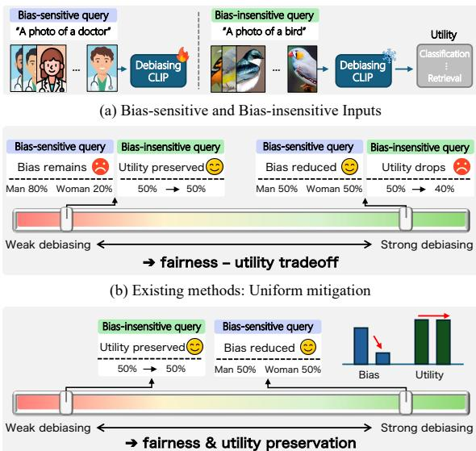

Figureure 2 · : Fairness versus utility for Race and AgeFigure 2: Fairness versus utility for Race and Age. Accuracy is measured as ImageNet zero-shot top-1 accuracy (%), and Fairness is measured as 1 − MaxSkew@1000<sup>1</sup> (higher is better). Existing queryindependent debiasing baselines (Chuang et al., 2023; Wang et al., 2021b; Zhang et al., 2025) exhibit a fairness– utility trade-off, whereas our method improves fairness while achieving higher accuracy.这张图/表用于判断 Selective Test-Time Debiasing for CLIP 的实验收益来自哪里。重点看替换、消融或跨模型设置下趋势是否一致，而不是只看单个最高分。

(c) Ours: Selective mitigation via reward-gating for bias-sensitive inputs Figure 1: (a) W(c) Ours: Selective mitigation via reward-gating for bias-sensitive inputs Figure 1: (a) We categorize inputs into bias-sensitive and bias-insensitive, where only the former requires debiasing intervention. (b) Existing methods apply uniform mitigation, creating a structural trade-off: weak debiasing retains bias in sensitive queries (left), while strong debiasing distorts insensitive queries, degrading utility (right). (c) Our approach employs selective mitigation via reward-gating, which applies strong debiasing only to bias-sensitive inputs while preserving insensitive ones, ensuring both fairness and utility.这张图来自论文 PDF 的结构化抽取。当前用于辅助理解 Selective Test-Time Debiasing for CLIP 的方法或实验，请结合正文精读段落一起看。